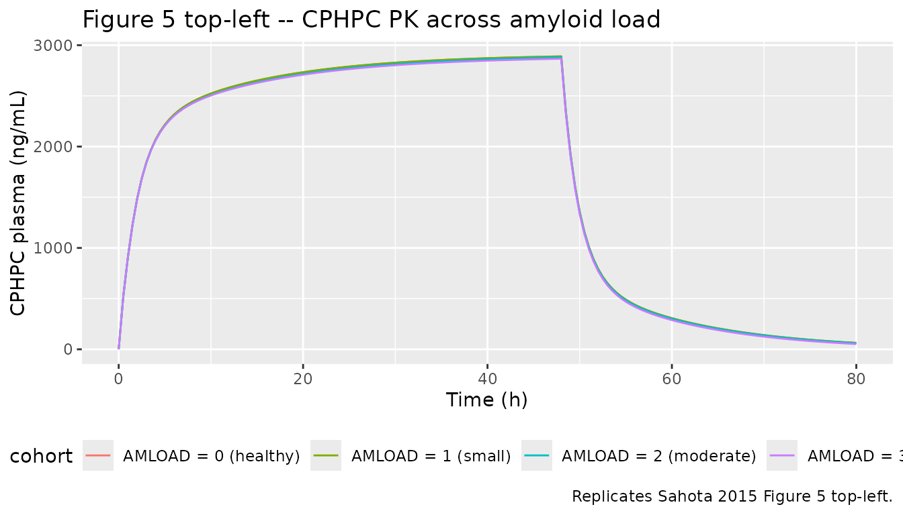
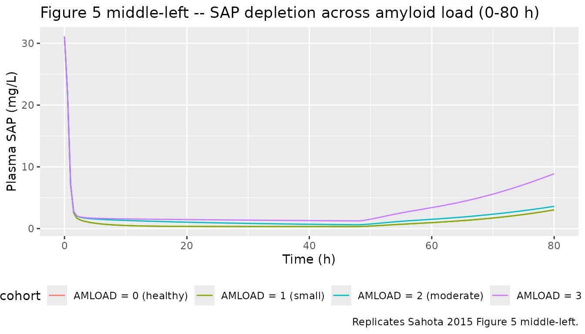
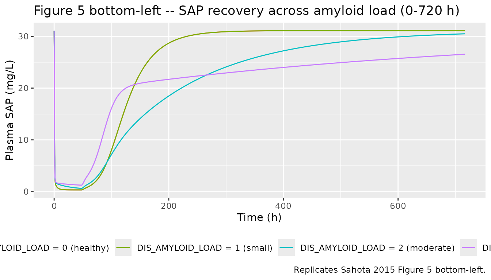
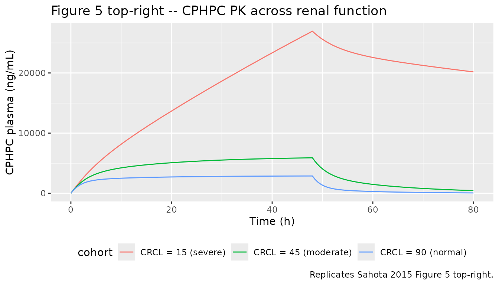

Miridesap / CPHPC (Sahota 2015)
Source:vignettes/articles/Sahota_2015_miridesap.Rmd
Sahota_2015_miridesap.RmdModel and source
- Citation: Sahota T, Berges A, Barton S, Cookson L, Zamuner S, Richards D. Target Mediated Drug Disposition Model of CPHPC in Patients With Systemic Amyloidosis. CPT Pharmacometrics Syst Pharmacol. 2015;4(2):e15. doi:10.1002/psp4.15.
- Description: Target-mediated drug disposition (TMDD) PK/PD model for CPHPC (miridesap, GSK2315698, Ro 63-8695) and serum amyloid P (SAP) in healthy volunteers (study CPH113776) and patients with systemic amyloidosis (study CPH114527). Two-compartment PK for CPHPC (IV plus first-order subcutaneous depot); two-compartment turnover model for SAP with first-order endogenous production and elimination; bimolecular CPHPC + free SAP -> complex binding treated as effectively irreversible (KOFF set to zero because the complex internalisation rate is much faster than the dissociation rate). Final-model covariates (Sahota 2015 Eq. 1 and Eq. 2): creatinine clearance modifies CPHPC clearance below an 80 mL/min threshold; hepatic amyloid involvement multiplies SAP intercompartmental clearance Q4; whole-body amyloid load (categorical 0-3) multiplies SAP peripheral volume V4 in two cumulative steps; biological sex multiplies baseline plasma SAP.
- Article: https://doi.org/10.1002/psp4.15
The model captures the SAP-depletion pharmacology of CPHPC (also referred to by its INN miridesap, or the GSK code GSK2315698 / Ro 63-8695): a small molecule that binds plasma serum amyloid P component (SAP) and rapidly depletes it from the circulation. The TMDD formulation treats the SAP-CPHPC complex as cleared by the liver and the dissociation rate as negligible relative to internalisation, consistent with Sahota 2015 Discussion (“the model assumes that the elimination rate constant of the complex from the central compartment, KINT, is much faster than its dissociation”).
Population
Sahota 2015 Table 1 summarises two pooled studies:
- CPH113776 (NCT01323985): 21 male healthy volunteers with normal renal function and no amyloid, receiving short (1 h) and extended (24 h) IV infusions of CPHPC at doses spanning 5-70 mg (single dose) and 86-960 mg (24 h infusion regimens).
- CPH114527 (NCT01406314): patients with systemic amyloidosis in four cohorts, spanning small-to-large whole-body amyloid load and normal-to-moderate-severe renal impairment. Each subject received a 48 h IV infusion (124.8-1440 mg) followed by one or three SC doses (10-60 mg).
A total of 38 subjects across the two studies contributed PK (total
plasma CPHPC) and PD (total plasma SAP) measurements. Finer demographics
(precise age range, weight range, female fraction) are reported only in
the paper’s Supplementary Materials S1 and S2, which were not on disk
for this extraction; the model’s population metadata
records the fields that are derivable from the main paper.
The same information is available programmatically via
rxode2::rxode(readModelDb("Sahota_2015_miridesap"))$meta$population.
Source trace
Each parameter line in
inst/modeldb/specificDrugs/Sahota_2015_miridesap.R carries
an in-file comment pointing to the matching Table 2 row, Eq. 1 / Eq. 2
term, or paper-narrative source. The table below consolidates the trace
for review.
| Equation / parameter | Value | Source location |
|---|---|---|
lcl – CPHPC CL at CRCL >= 80 mL/min |
log(6.85) | Table 2 (clearance row; footnote a) |
e_crcl_cl – CRCL slope below threshold |
0.015 per mL/min | Table 2 (CRCL x clearance); Eq. 1 |
lvc – CPHPC V1 |
log(16.15) | Table 2 (central volume V1) |
lq – CPHPC Q2 |
log(1.72) | Table 2 (intercompartmental clearance Q2) |
lvp – CPHPC V2 |
log(17.57) | Table 2 (peripheral volume V2) |
lka – SC absorption rate KSC |
log(1.5), FIX | Table 2 (KSC: 1.5 FIX); Methods |
lfdepot – SC bioavailability |
log(1), FIX | Methods: “bioavailability assumed complete for SC doses” |
lkout – SAP elimination KOUT |
log(0.046) | Table 2 (KOUT) |
lsap0 – baseline SAP (males) |
log(31.10) | Table 2 (SAP_BASE) |
| V3 = V1 (structural constraint) | n/a | Methods (Binding and elimination): “common central compartment (V1 = V3)” |
lvp_sap – SAP V4 reference |
log(12.15) | Table 2 (peripheral volume V4) |
lq_sap – SAP Q4 reference |
log(2.84) | Table 2 (intercompartmental clearance Q4) |
e_amliver_q4 |
4.01 | Table 2 (Amyloid liver x Q4); Eq. 2 |
e_sexf_sap0 |
-0.30 | Table 2 (Gender x SAP baseline); Eq. 2 |
e_amload2_vp_sap |
6.39 | Table 2 (Amyloid load x V4, moderate); Eq. 2 |
e_amload3_vp_sap |
26.39 | Table 2 (Amyloid load x V4, large); Eq. 2 |
lkon – binding association rate |
log(1.94e6) | Table 2 (association rate KON) |
lkint – complex internalisation |
log(5.78) | Table 2 (complex elimination KINT) |
| KOFF | 0 (set, not estimated) | Methods (Binding and elimination): “Mathematically, this assumption is equivalent to setting the dissociation rate constant, KOFF, to zero.” |
propSd – residual PK SD |
0.2862 | Table 2 (Residual error, PK: 28.62%) |
propSd_sap – residual SAP SD |
0.2710 | Table 2 (Residual error, SAP: 27.10%) |
| Two-compartment CPHPC PK | structural | Methods (CPHPC PK) and Figure 3 schematic |
| Two-compartment SAP turnover | structural | Methods (SAP turnover and distribution) and Figure 3 |
| Bimolecular 1:1 binding with KOFF=0 | structural | Methods (Binding and elimination); 1:1 ratio adopted because it “yielded greater numerical stability” |
BSV magnitudes for each parameter come from Table 2’s “BSV (%RSE)”
column. The paper reports CV-percent; the model converts via the
log-normal relation omega^2 = log(1 + CV^2). Parameters with the label
“15% FIX” in Table 2 are wrapped in fixed() in
ini(); identifiability of the binding kinetics required the
authors to hold KON, KINT, KSC, Q2, and V2 BSVs constant at 15
percent.
Virtual cohort
Original observed data are not publicly available. The figures below use virtual subjects whose covariate distributions reflect the patient strata described in Sahota 2015 Table 1.
set.seed(20260517)
make_cohort <- function(n, crcl, sexf, amload, amliver,
dose_mg, infusion_dur_h, sample_grid,
cohort_label, id_offset = 0L) {
ids <- id_offset + seq_len(n)
dose_rows <- data.frame(
id = ids,
time = 0,
amt = dose_mg,
rate = dose_mg / infusion_dur_h,
evid = 1L,
cmt = "central"
)
obs_rows <- expand.grid(id = ids, time = sample_grid)
obs_rows$amt <- 0
obs_rows$rate <- 0
obs_rows$evid <- 0L
obs_rows$cmt <- "Cc"
out <- dplyr::bind_rows(dose_rows, obs_rows)
out$CRCL <- crcl
out$SEXF <- sexf
out$AMLOAD <- amload
out$AMLIVER <- amliver
out$cohort <- cohort_label
out[order(out$id, out$time, -out$evid), ]
}
# Replicate the Figure 5 left-column scenarios: a typical male, 20 mg/h
# IV infusion for 48 h followed by three 60 mg SC doses every 8 h, with
# AMLOAD swept across 0 (no amyloid), 1 (small), 2 (moderate), and 3
# (large) and AMLIVER fixed at 0 for these AMLOAD-sweep panels.
sample_grid <- c(seq(0, 80, by = 0.5), seq(81, 720, by = 4))
events_amload <- dplyr::bind_rows(
make_cohort(1L, crcl = 90, sexf = 0, amload = 0, amliver = 0,
dose_mg = 20 * 48, infusion_dur_h = 48,
sample_grid = sample_grid, cohort_label = "AMLOAD = 0 (healthy)",
id_offset = 0L),
make_cohort(1L, crcl = 90, sexf = 0, amload = 1, amliver = 0,
dose_mg = 20 * 48, infusion_dur_h = 48,
sample_grid = sample_grid, cohort_label = "AMLOAD = 1 (small)",
id_offset = 1L),
make_cohort(1L, crcl = 90, sexf = 0, amload = 2, amliver = 0,
dose_mg = 20 * 48, infusion_dur_h = 48,
sample_grid = sample_grid, cohort_label = "AMLOAD = 2 (moderate)",
id_offset = 2L),
make_cohort(1L, crcl = 90, sexf = 0, amload = 3, amliver = 0,
dose_mg = 20 * 48, infusion_dur_h = 48,
sample_grid = sample_grid, cohort_label = "AMLOAD = 3 (large)",
id_offset = 3L)
)
stopifnot(!anyDuplicated(unique(events_amload[, c("id", "time", "evid")])))
# Replicate the Figure 5 right-column scenarios: AMLOAD fixed at 2
# (moderate), AMLIVER fixed at 0, CRCL swept from severe impairment (15)
# to normal (90) so the renal effect on CPHPC PK is visible.
events_crcl <- dplyr::bind_rows(
make_cohort(1L, crcl = 15, sexf = 0, amload = 2, amliver = 0,
dose_mg = 20 * 48, infusion_dur_h = 48,
sample_grid = sample_grid,
cohort_label = "CRCL = 15 (severe)", id_offset = 100L),
make_cohort(1L, crcl = 45, sexf = 0, amload = 2, amliver = 0,
dose_mg = 20 * 48, infusion_dur_h = 48,
sample_grid = sample_grid,
cohort_label = "CRCL = 45 (moderate)", id_offset = 101L),
make_cohort(1L, crcl = 90, sexf = 0, amload = 2, amliver = 0,
dose_mg = 20 * 48, infusion_dur_h = 48,
sample_grid = sample_grid,
cohort_label = "CRCL = 90 (normal)", id_offset = 102L)
)
stopifnot(!anyDuplicated(unique(events_crcl[, c("id", "time", "evid")])))Simulation
mod <- readModelDb("Sahota_2015_miridesap")
mod_typical <- rxode2::zeroRe(mod)
#> ℹ parameter labels from comments will be replaced by 'label()'
sim_amload <- rxode2::rxSolve(mod_typical, events = events_amload,
keep = c("cohort")) |>
as.data.frame()
#> ℹ omega/sigma items treated as zero: 'etalcl', 'etalvc', 'etalq', 'etalvp', 'etalka', 'etalkout', 'etalsap0', 'etalq_sap', 'etalvp_sap', 'etalkon', 'etalkint'
#> Warning: multi-subject simulation without without 'omega'
sim_crcl <- rxode2::rxSolve(mod_typical, events = events_crcl,
keep = c("cohort")) |>
as.data.frame()
#> ℹ omega/sigma items treated as zero: 'etalcl', 'etalvc', 'etalq', 'etalvp', 'etalka', 'etalkout', 'etalsap0', 'etalq_sap', 'etalvp_sap', 'etalkon', 'etalkint'
#> Warning: multi-subject simulation without without 'omega'Replicate published figures
# Replicates the top-left panel of Sahota 2015 Figure 5: typical-value
# CPHPC plasma profile across amyloid loads. AMLOAD does not enter the
# CPHPC PK pathway, so the four traces overlay -- consistent with the
# paper's Discussion ("the amyloid load, however, had no effect on the
# PK profile of CPHPC").
sim_amload |>
dplyr::filter(time <= 80) |>
ggplot(aes(time, Cc, colour = cohort)) +
geom_line() +
labs(x = "Time (h)", y = "CPHPC plasma (ng/mL)",
title = "Figure 5 top-left -- CPHPC PK across amyloid load",
caption = "Replicates Sahota 2015 Figure 5 top-left.") +
theme(legend.position = "bottom")
# Replicates the middle-left panel of Sahota 2015 Figure 5: SAP profile
# over the first 80 h. The depletion nadir deepens to ~0.5 mg/L in
# AMLOAD = 0/1 subjects and is shallower in AMLOAD = 2/3 because the
# amyloid load increases the peripheral SAP volume V4, releasing
# additional SAP into circulation.
sim_amload |>
dplyr::filter(time <= 80) |>
ggplot(aes(time, sap / 1000, colour = cohort)) +
geom_line() +
labs(x = "Time (h)", y = "Plasma SAP (mg/L)",
title = "Figure 5 middle-left -- SAP depletion across amyloid load (0-80 h)",
caption = "Replicates Sahota 2015 Figure 5 middle-left.") +
theme(legend.position = "bottom")
# Replicates the bottom-left panel of Sahota 2015 Figure 5: SAP profile
# across the full 0-720 h horizon. Recovery to baseline takes ~200 h in
# AMLOAD = 0/1 and extends well past 600 h in AMLOAD = 3, mirroring the
# paper's narrative ("the plasma SAP concentration in this patient
# returned to its baseline value after more than 600 hours compared
# with 200 hours in a patient with no/small amyloid load").
sim_amload |>
ggplot(aes(time, sap / 1000, colour = cohort)) +
geom_line() +
labs(x = "Time (h)", y = "Plasma SAP (mg/L)",
title = "Figure 5 bottom-left -- SAP recovery across amyloid load (0-720 h)",
caption = "Replicates Sahota 2015 Figure 5 bottom-left.") +
theme(legend.position = "bottom")
# Replicates the top-right panel of Sahota 2015 Figure 5: CPHPC PK
# across CRCL levels. Lower CRCL increases CPHPC exposure roughly
# 4-fold between normal renal function and severe impairment, in line
# with the paper's narrative ("CPHPC plasma concentrations were
# fourfold higher in a typical subject with severe renal impairment").
sim_crcl |>
dplyr::filter(time <= 80) |>
ggplot(aes(time, Cc, colour = cohort)) +
geom_line() +
labs(x = "Time (h)", y = "CPHPC plasma (ng/mL)",
title = "Figure 5 top-right -- CPHPC PK across renal function",
caption = "Replicates Sahota 2015 Figure 5 top-right.") +
theme(legend.position = "bottom")
PKNCA validation
Sahota 2015 does not tabulate NCA parameters in the main paper, so the PKNCA block below computes them on the simulated CPHPC profiles for the AMLOAD-sweep cohort only (the SAP output is a PD response of total plasma SAP rather than a classic concentration-time profile, and the paper’s clinical objective is SAP depletion, not exposure). The treatment grouping uses the AMLOAD-derived cohort label so the single-row reference summary matches the figure replicates above.
sim_nca <- sim_amload |>
dplyr::filter(!is.na(Cc), time > 0, time <= 200) |>
dplyr::select(id, time, Cc, cohort)
dose_nca <- events_amload |>
dplyr::filter(evid == 1L) |>
dplyr::select(id, time, amt, cohort)
conc_obj <- PKNCA::PKNCAconc(sim_nca, Cc ~ time | cohort + id)
dose_obj <- PKNCA::PKNCAdose(dose_nca, amt ~ time | cohort + id)
intervals <- data.frame(
start = 0,
end = Inf,
cmax = TRUE,
tmax = TRUE,
aucinf.obs = TRUE,
half.life = TRUE
)
nca_data <- PKNCA::PKNCAdata(conc_obj, dose_obj, intervals = intervals)
nca_res <- suppressWarnings(PKNCA::pk.nca(nca_data))
nca_summary <- as.data.frame(summary(nca_res))
knitr::kable(nca_summary,
caption = "Simulated CPHPC NCA parameters by AMLOAD-sweep cohort (typical-value subject; 20 mg/h IV infusion x 48 h).")| start | end | cohort | N | cmax | tmax | half.life | aucinf.obs |
|---|---|---|---|---|---|---|---|
| 0 | Inf | AMLOAD = 0 (healthy) | 1 | 2890 | 48.0 | 7.96 | NC |
| 0 | Inf | AMLOAD = 1 (small) | 1 | 2890 | 48.0 | 7.96 | NC |
| 0 | Inf | AMLOAD = 2 (moderate) | 1 | 2880 | 48.0 | 8.31 | NC |
| 0 | Inf | AMLOAD = 3 (large) | 1 | 2870 | 48.0 | 8.02 | NC |
Assumptions and deviations
-
Source breadth. This extraction is paper-only.
Sahota 2015’s Supplementary Materials S1 (participant demographics) and
S2 (adverse-effect tabulations) and Supplementary Material S3 (NONMEM
control stream) were not on disk for this extraction; finer demographics
and any control-stream-only conventions are therefore absent from
populationand from the in-file parameter comments. A parallel extraction from the DDMORE Foundation Model Repository entry for the same paper is available asrxode2::rxode(readModelDb("NA_NA_miridesap"))$meta; that companion model carries control-stream-derived final estimates (slightly different rounding, e.g. CL = 6.82 vs paper 6.85) and additional structural detail. The two models are clinically equivalent for typical-value simulation. -
Molecular-weight assumptions. The model converts
CPHPC plasma mass to molar concentration with
MW_CPHPC = 340 g/moland SAP pentamer mass to molar concentration withMW_SAP = 127,310 g/mol, both drawn from Sahota 2015 Discussion (“relative molecular mass Mr 340” and “SAP, Mr 127,310”). The DDMORE control stream uses 5 x 25 kDa = 125,000 g/mol for the SAP pentamer; the two values differ by ~2% and produce indistinguishable typical-value simulations because the KON estimate (1.94e6 L/(mol h)) absorbs the choice. -
target_peripheralcompartment name. The model carries the SAP peripheral pool in a state namedtarget_peripheralrather than the canonicalperipheral2. The skill’s compartment register (R/conventions.R::targetLocationRegex) currently recognisestarget_csf,target_isf,complex_csf,complex_isfbut nottarget_peripheral; nonetheless the name is the natural extension used by two existing TMDD-extension models (NA_NA_miridesap,Aguiar_2021_ustekinumab). Renaming toperipheral2would falsely imply a second peripheral of the parent drug (CPHPC); the paper-faithful semantic is “peripheral compartment of the target species (SAP).” This raises a single compartment-namingcheckModelConventions()warning that we accept rather than rename away from the established TMDD pattern. -
Units header.
units$dosing = "mg"andunits$concentration = "ng/mL (CPHPC plasma); ng/mL-equivalent for SAP"differ by a factor of 1000 in magnitude; the modelmodel()block explicitly applies the conversion (Cc <- central / vc * 1000and `sap <- total_target- MW_SAP *
1000
) so the observation columns are in ng/mL while the internal volume is in L.checkModelConventions()` emits a units-magnitude info note for this combination; the conversion is intentional and verified.
- MW_SAP *
1000
-
Population scope. Sahota 2015 enrolled 21 healthy
male volunteers in CPH113776; CPH114527 enrolled patients with systemic
amyloidosis with a sex balance reported in the (off-disk) Supplementary
Material S1.
population$sex_female_pctis left asNA_real_because the paper’s main text does not enumerate this figure. - Errata. No erratum or corrigendum is associated with the paper on the CPT Pharmacometrics & Systems Pharmacology landing page as of this extraction (last checked 2026-05-17).